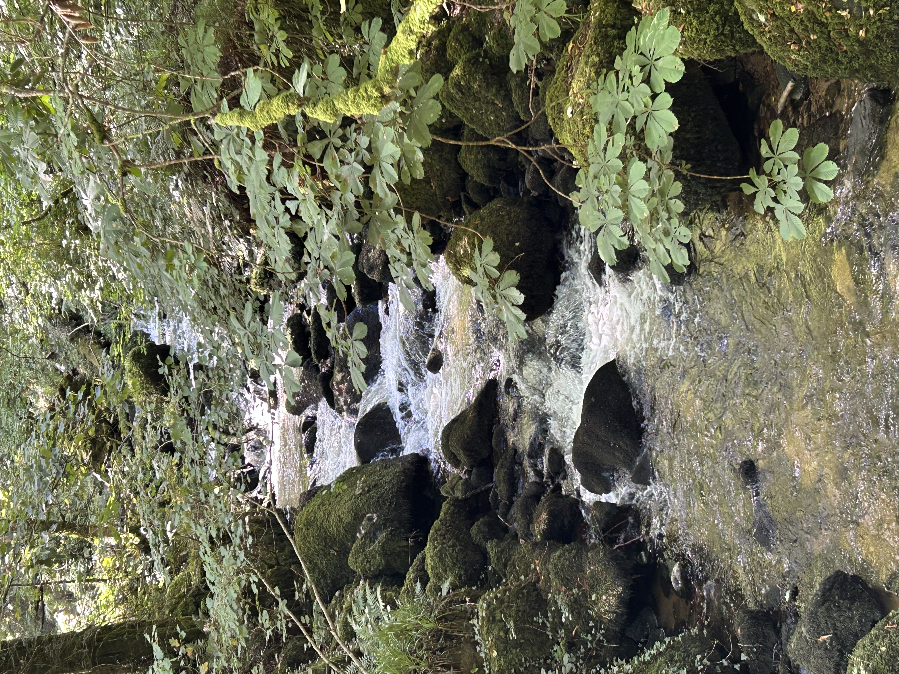
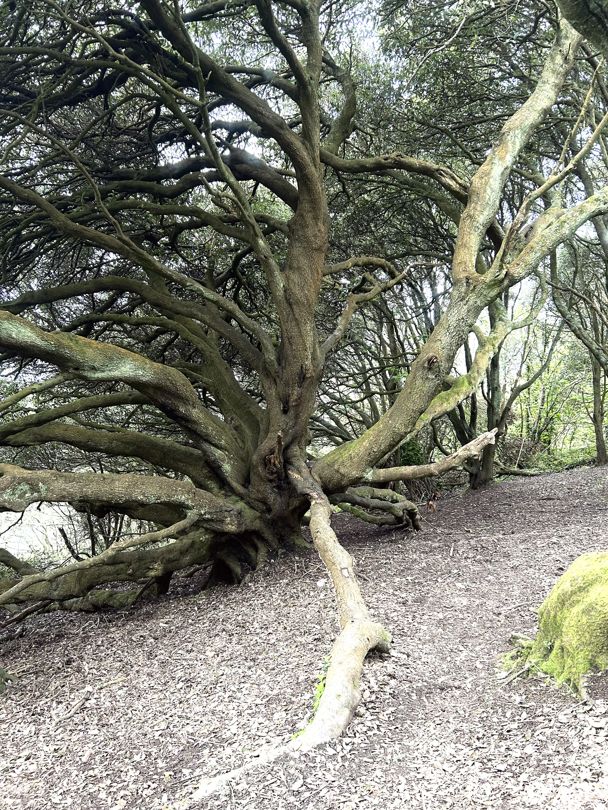

BeSide Therapy Cornwall offers gentle, person‑centred counselling in Falmouth, Penryn, and the wider Cornwall area. I support children, young people, and adults with a calm, compassionate approach shaped around each person’s needs, pace, and story. Whether through talking, creativity, or quiet reflection, sessions are designed to help you feel grounded, understood, and supported.
I welcome referrals from:
Individuals • Parents & carers • Schools • Health & social care professionals • Community organisations

What Counselling Sessions Can Include
- Gentle, attuned conversation
- Creative or reflective tools — art, writing, movement, grounding
- Sensory‑aware approaches
- Space to pause, breathe, and reconnect with yourself
➰ Therapeutic Walking & Outdoor Counselling
I also offer therapeutic walking sessions in natural locations around Cornwall. These gentle outdoor sessions allow us to walk side by side, creating a calm, grounded environment that many people find easier than traditional face‑to‑face work.
If you have a well‑behaved dog who brings you comfort, they are welcome to join us, as long as they do not distract from your therapeutic process.
We will choose a location together that feels safe, accessible, and supportive of your needs. This is a temporary offer while my indoor space is being developed.
Get in touch to arrange a walking sessionPerson‑Centred Counselling Information Flyer
You can view or download the counselling information flyer here. It offers a gentle overview of the counselling approach, what sessions may include, and how I support children, young people, and adults across Cornwall.